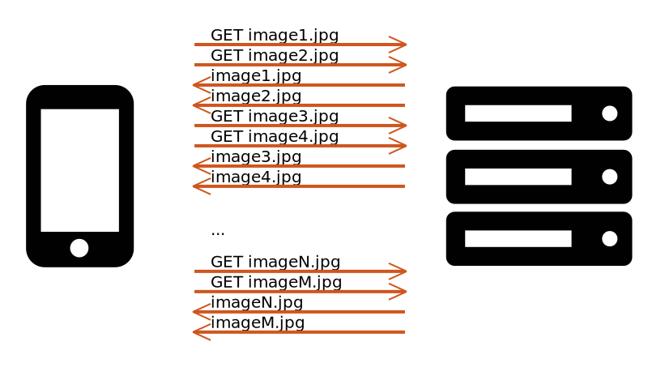
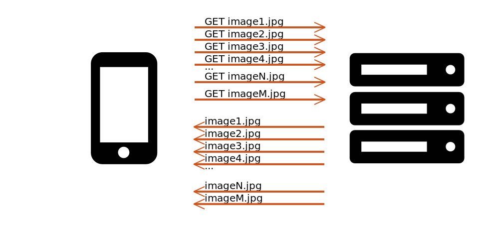

layout: true class: center, middle, bg-down --- ###Past, Present and Future of Resource Loading .center[] .no-bg.center[Yoav Weiss | @yoavweiss] .absolute-bottom-left[] ??? Hi, I'm Yoav Weiss. I work at Akamai on out web optimization products, as well as on making browsers faster, and I'm here today to talk about why resource loading on the Web is inherently slow, and how can we make it faster despite that fact. --- layout: true class: center, middle background-image: url(media/sketches/present.jpg) .low-right.no-bg[@yoavweiss] --- ??? Illustrations credits --- background-image: url(media/pc.jpg) ??? I’ve been in this industry for a while now. When I first started in the industry, I was working on a web optimization proxy, as one does. My very first task was to build a proprietary SPDY-like client-server protocol in order to be able to send multiple requests and receive multiple responses at once over a single connection. My second task was to integrate an image compression library into the server. The image compression server was usually getting 2x size reduction on the images. And network bandwidth at the time was a serious issue, with top-notch mobile networks clocking at a cool 33kbps!! --- background-image: url(media/surprise.jpg) ??? But, we soon noticed something odd. Even with those awful speeds, a 2x reduction in image sizes did not give us similar performance improvements, unless they were deployed at the same time as the SPDY-like client-server protocol (which couldn't be deployed everywhere). At first we were baffled by this. If we’re cutting down the bytes we’re sending down by a factor of 2, why aren’t we seeing 2x performance improvements??? --- # `time != ` <br> # `(bytes / BW)` ??? The reason this was the case was that on the Web, the basic equations to calculate how long "downloading a site" would take do not apply. We cannot treat the contents of a site as "bytes". The contents of a Web site are discovered progressively, rendered progressively and often continue to download beyond the point in which considers the site to be "loaded". --- # Latency! ??? One of the reasons for the non-linearity that we saw was the impact of latency on the HTTP protocol. The fancy networks at the time only delivered 33Kbps, but they also did that with round trip times of 700ms, making the page’s loading performance dominated by latency. But, that was a long time ago, right? The industry has moved on, and those problems are all gone, *right*? Well, we have advanced a lot in the last… almost 20 years. I’m really old... --- # Things got better! ??? We have significantly better networks, we have improved image formats, and we have significantly faster computers. But we also have slower computers (pull out phone) Latency of cellular networks have decreased significantly, but speed of light hasn't changed. It still takes a few hundreds of milliseconds to send light beams from one end of the world to the next. ---  ??? And content on the web has evolved significantly over the last 20 years. From simple text sites with images and an occasional JS based form validation, it turned into a full fledged application development platform, and one where you (at least by default) *download your entire app every time you want to use it*. --- # Why so different? ??? And on that front, there's also a fundenmental difference between the web and previous internet protocols that preceded it. Other protocols are often based on establishing a connection, downloading a resource and that's it. The Web also started out that way. HTTP 0.9 was a very simple protocol that was used to download HTMLs. But little by little, we added images. And styles. And scripts. And fonts. plugins. videos. audio. And all these different resources now need to be downloaded together in order to create a web page. to create the experience we want to deliver to our users. --- ## Problems <br> ## Today's Solutions <br> ## Tomorrow's ??? So today I wanted to talk about how resources are loaded the web and all the problems with that which make this process inherently slow. So I want to talk about connection establishment, server side delays, slow start, resource discovery, queueing, bandwidth contention and bloat. Then I want to go over a few of today's solutions to these problems. These solutions are significantly better than what we had in the good old days of HTTP/1.1 and 33kbps bandwidth. So as part of that I want to talk about H2, H2 push, preload, preconnect. But all these solutions are not yet perfect. So I want to finish the tour by talking about tomorrow's solutions - all the things that are currently in the works to improve resource loading on the web, and solve it once and for all (I hope). Let's get started: (5 minutes) --- # Why is loading slow? --- background-image: url(media/sketches/handshake.jpg) ??? Problem #1 -- # Connection establishment ??? When we start loading a page, once the user has clicked a link or wrote down a URL, we start the connection establishment process. That the first step that's inherently latency bound. --- background-image: url(media/sketches/handshake.jpg) class: bright .block[  ] ??? The browser has to translate the user visible hostname in the URL into an IP address, and therefore spends 1 RTT in that translation process. --- background-image: url(media/sketches/handshake.jpg) class: bright .block[  ] ??? Then a TCP connection needs to be established between the browser and the server. That's a process called the 3 way handshake, which the great Paul Irish once called "the what'sup protocol". The browser sends a packet to the server, letting it know that it wants to create a connection. That's the first "whatsup". Then the server repeats the process, telling the client that it's ready to start a connection. Only after that, we can start sending data on that TCP connection. And that process, takes us another full RTT. --- background-image: url(media/sketches/handshake.jpg) class: bright .block[  ] ??? TLS has its own version of the whatsup protocol, only it's more polite so here it's "Hello". The browser says hello to the server, the server says hello to the browser, then because encryption is a bit more complex than sending data in the clear, they need to exchange secrets and settle on an encryption key. I won't go into the details, but that usually takes up another RTT, to bring us to 2 RTTs in total for TLS, and 4 RTTs for the entire connection establishment process. --- background-image: url(media/sketches/server.jpg) ??? Problem #2 -- # Server side processing ??? Then, when the connection establishment parts are over, the browser can send out a request. That's where the server side processing latency comes into play. Historically, before the seminal web performance work by Steve Souders, server side processing was considered *the* problem in web performance, and it was what people were optimizing for. While Steve showed that front end performance is responsible for 80% of the time people are waiting for web pages, 20% is nothing to scoff at. So server side performance is still very much something to be concerned with. At Akamai we see median server side performance times (or TTFB between the edge server and the origin server) of ~450ms, which is a lot. --- class: contain background-image: url(media/sketches/slowstart.jpg) ??? Problem #3 -- .up.block[ # Slow Start ] ??? Once the server has the HTML ready and starts sending it down, that's when we hit slow start. --- class: contain background-image: url(media/sketches/slowstart.jpg) .center[] ??? When the server starts sending data to the user, it doesn't know how much bandwidth it will have for the purpose. It can't be sure what amount of data will overwhelm the network and cause congestion, which is a bad bad thing. TCP slow start is a mechanism that enables the server to gradually discover the connection's limits. It also limits us in the amount of data that we can initially send. Who here have heard of the 14KB rule, where all your critical resources have to fit into those first 14KB of your HTML? Slow start (and an initial congestion window of 10 packets) are the reason for that rule. Everything beyond those initial 14KB will take longer than an RTT to download, because the server is not sure it can send more than that without sending more than the network can handle. (10 minutes - 30 left) --- background-image: url(media/sketches/discovery.jpg) ??? Problem #4 -- class: bright .block.up[ # Discovery ] --- background-image: url(media/sketches/discovery.jpg) .block[  ] ??? Now, when the browser start receiving the HTML, it starts processing it , in order to find out ASAP which resources it needs to load. It tokenizes the HTML in a streaming fashion, and runs it through its preloader to find all the resources that are based in the HTML. But not all resources are in the HTML and can be discovered by the preload scanner. Some resources are only discovered after creating the DOM tree, or after calculating styles or after executing scripts. --- background-image: url(media/critical_rendering_path.png) ??? The browser needs the HTML in order to create the DOM - the Document Object Model. Blocking scripts block the parsing of HTML until they are downloaded, so they block the DOM creation. And CSS is required in order to create the CSS Object Model which together with the DOM is required to create the render tree, which is required for page layout and paint to happen. So before the user sees *anything* we need to download enough of the HTML and all the blocking CSS and JS. --- background-image: url(media/sketches/discovery.jpg) # Priority <br> ### HTML > CSS > JS > Fonts > Images ??? When downloading resources browsers need to decide which resources are more equal than others. The basics is described here: HTML > CSS > JS > Fonts > Images, but in practice implementations have much more complex logic. Blocking scripts at the top are higher priority than blocking scripts at the bottom. Async scripts are lower priority than blocking scripts. In-viewport images are higher priority than out-of-viewport images. And this entire logic can vary between browsers and between browser versions. --- background-image: url(media/sketches/discovery.jpg) .block[  ] ??? So, if we look at our resource download dependency tree, the browser starts out by just downloading the HTML. That's the only URL it's aware of. --- background-image: url(media/sketches/discovery.jpg) .block[  ] ??? Then as the HTML is processed, CSS, images and scripts are discovered. --- background-image: url(media/sketches/discovery.jpg) .block[  ] ??? But in many cases, CSS and scripts load other resources. --- background-image: url(media/sketches/discovery.jpg) .block[  ] ??? Which then can load even more resources --- background-image: url(media/dependency_tree.jpeg) .block.down[ ## Dependencies! ] ??? And this creates a dependency tree that's deep and contains many nodes, each layer in that tree depends upon the downloading and processing of the layer above it. Now some resources are better at this than others: HTML and SVG can be processed as they come, so a resource dependency in their first 100 bytes doesn't need to wait until the entire resource is downloaded before the download can start. But, CSS and JS are not the same. They have to be processed in their entirety (and for CSS, all the blocking CSS has to be downloaed and processed) before any resource download can start. And that's not a bug, it's inherent to the way these formats work. And there's inherent tension here between flattenning the dependency tree which would help the browser load the page earlier, and the fact that humans write websites, and for the humans, it's often better to have smaller modules, which they can reason about without looking at the larger picture. So we have the old-fashioned CSS `@import`s and the newly fangled ES6 modules. They make writing and managing code dependencies significantly easier. They also make it harder for the browser, adding another layer to that dependency tree. --- background-image: url(media/sketches/discovery.jpg)  ??? And you can see that the bandwidth graph for that particular site has a lot of holes in it, during which the browser wasn't downloading anything. --- background-image: url(media/sketches/q.jpg) ??? problem #5 -- # Queueing ??? Those of you who travel often are probably familiar with that particular scene. A security line where the person at the top of line just now realized that they have to take out their laptop, all liquids, etc and is stalling well-prepared passangers behind them? Well, that's a real-life representation of --- background-image: url(media/sketches/q.jpg) # HTTP/1.1 `¯\_(ツ)_/¯` ??? Requests in HTTP/1.1 are going out over multiple connections (so you have multiple queues, often 2 at the day), but each connection could handle a single request at a time. --- background-image: url(media/sketches/q.jpg) class: bright .block[  ] --- background-image: url(media/sketches/q.jpg) class: bright .block[  ] --- background-image: url(media/sketches/q.jpg) class: bright .block[  ] ??? That takes many RTTs and make our resource download latency bound. Later on, browser added more connections, but that's the equivalent of opening more security stations. It's better, but doesn't solve the "head of line" blocking issue. --- background-image: url(media/sketches/contention.jpg) ??? Problem #6 -- .block.up[ # Contention ] ??? The problem of bandwidth contention happens when we have multiple resources both downloaded at the same time, but where: a) bandwidth is the bottleneck (which can often be the case in cellular networks) b) High priority content is downloaded alongside lower priority content In those cases, the lower priority content is slowing down the higher priority content (by competing with it on bandwidth). In HTTP/1.1, we have bandwidth contention by definition, and browsers somehow mitigated that by delaying the sending of low priority resources. But even in H2, where everything is downloaded on a single connection, contention is still there. It's no longer a problem between resources that are fetched on the same H2 connection, but is still very much a problem for resources fetched over other connections. So if I have a site that includes resources from multiple domains, contention is still very much an issue. --- background-image: url(media/sketches/bloat.jpg) ??? And finally, the seventh deadly sin of resource loading. -- .block.up[ # Bloat ] ??? The bigger your resources, the longer it would take for them to download, the more vulnerable they will be to bad network events along the way. So resource size certainly still matters. (15 minutes - 25 left) --- background-image: url(media/sketches/problems.jpg) ??? So we have (go over the problems) <br> Let's go over these problems in detail and see how we can reduce the pain they cause. I'll go over that list, but not necessarily in that order, trying to get the most actionable advice in first. I'm purposefully leaving out of scope here third parties, which Andy covered in his talk. --- layout: true class: center, middle background-image: url(media/sketches/q.jpg) .low-right.no-bg[@yoavweiss] --- # Queueing ??? So let's start by talking about queueing. We talked about the perils of HTTP/1.1 and how each connection there could only send a single request at a time. --- # HTTP2 to the rescue! ??? Well, H2 solves that problem. With H2 you can send multiple streams (each one corresponding to a request-response pair) on a single connection. So you can send a very large number of requests in parallel, and have the server serve you the one that is ready. That's a huge difference from the way connection handling was done in H1. If we go back to the airport security line analogy: H2 is like the same security line in an airport that has those parallel stations, where a large number of people can all prepare their luggage for inspection, and whoever's ready can go first. I tried to google for a photo to demonstrate that, but after a while realized that googling "airport security" images may seem suspicious... So no photo for you :) Note that H2 doesn't magically fix everything not does it download all the resources in parallel. If we are bound by the network's bandwidth, then it's still that bandwidth that will limit us. But it enables us to let the server know about all the resources, and letting it efficiently fill the bandwidth pipe with them. ---   ??? Here we can see the difference between H1 and H2, where H2 can simply send all the requests up and get the response down, making the resource download process bounded by the bandwidth, rather than the latency. --- # H2 priorities ??? Since H2 changes many things from H1, it also had to rethink priorities. In H1 prioritization is simply done by not sending certain requests. When H2 came around, it added a prioritization scheme, so that the browser sends all the requests to the server, and the server orders the responses based on their priorities. --- # H2 doesn't fix everything ??? While H2 is significantly better than H1, it's not quite perfect. --- # Priority responsiveness ??? Due to implementation concerns I don't want to go into, Because the priority queues are managed in user space, it's hard for the server to be very reactive to priority changes, which often leads to low-priority resources sent before high-priority ones. --- # Packet loss HOL ??? Another problem is TCP losses. Since we use a single TCP connection and TCP is a reliable protocol, any loss means that all H2 streams now have to wait for that TCP pakcet to get retransmitted. That's a reincarnation of the Head-of-line blocking problem, in a different way. --- # X-resource compression ??? Finally, since there's no shared compression context between resources - we cannot compress multiple files together as if they were one - it means that it's still beneficial to bundle resources together, even when H2 is around. --- # What's in the future? --- # QUIC and IETF QUIC ??? The planned way to resolve some of the issues we mentioned is to abandon the current stack altogether and build a new stack. For that purpose, Google has been working on the QUIC protocol. The protocol is moving the entire stack to user-space so implementations would have tighter control over what they are sending and when they are sending it - which will solve the priority responsiveness problems H2 has. Also, the QUIC protocol handles packet losses differently, meaning that a lost packet will only impact the resources that must be impacted (because they wait for the data), but other resources can continue to be read despite it. No more Head-of-line! You may argue that I shouldn't put QUIC in the "future" bit, because it's already shipped in Chrome and we can use it now. That's partially true, because you can. But deploying QUIC, unless you're a CDN that can keep up with the 6 weeks cadence of protocol changes, is not practical for folks to do on their own today. Having a standard, stable stack will enable people to install QUIC on their hosts. To that end, the IETF QUIC WG is working its way to standardizing the protocol, and plans to finish that by end of 2018. --- # H2 compression dictionaries ??? As far as the cross-resource compression problem goes: There is also a current proposal for creating H2 level compression that will be able to compress multiple resources as if they were a single resource. There are currently some security hurdles to making that a reality. --- # Web Packaging ??? Another alternative to the compression issues and bundling is better bundling! The Web Packaging proposal will enable to have a file format that bundles multiple resources together (so they can be compressed together) while at the same time enable to read and process each one of them individually. Since JS/CSS processing must be done on an entire file, that would mean that processing can happen in parallel to downloading instead of happening only once the full file is downloaded. --- layout: true class: center, middle background-image: url(media/sketches/server.jpg) .low-right.no-bg[@yoavweiss] --- # Server side processing ??? Server side processing is the next hurdle to loading, mainly for the HTML, which is often dynamic, and which delivery is critical for the loading of everything else. It's hard to give you generic advice on how to speed up your server side processing. You can instrument and figure out which operations take time, and try to speed them up, but at the end of the day, executing complex, scalable applications to create dynamic HTML pages can take time. It also doesn't help that the default runtime of many high level languages such as Python and Ruby is not extremely fast be default. But even if our backend times can be slow at times, that doesn't mean we can't put this waiting time to good use. --- background-image: url(media/flush.jpg) #Flush early ??? Early advice on server side performance had the advice to "flush early" - you don't have to wait for your DB in order to let the browser start processing your most-probably-static HTML head and start fetching some resources there. Only that this is often not the case - if your DB calls can fail, they can impact your entire document (e.g. respond with a completely different 404 page vs. your 200 page), and it's not always trivial to "switch" pages on the user after an error has happened (and without reloading the whole thing). So what can we do? --- # H2 push ??? Server push is a feature of the HTTP/2 protocol, which enables us to send down resources before the browser requested them. As such, it enables us to put the network connection to good use while we're waiting for the HTML to be generated by the server. --- ## Using the wait time .wide-img.center[] ??? In other words it enables us to turn this bandwidth graph, into this. --- ## Using the wait time .wide-img.center[] --- .block[  ] ??? 300 ms think time 100 ms RTT 98KB CSS+JS 120KB HTML --- .block[  ] ??? Another advantage of this is that it enables us to warn up the TCP connection while waiting for the HTML, which can significantly reduce the amount of RTTs and time it takes us to send down the HTML and the critical CSS and JS resources. --- background-image: url(media/h2_push_tough.png) ??? At the same time, H2 push is not necessarily easy to use. There are many still many gotchas, which makes it tricky to get right. --- # What's in the future? --- # Cache Digests ??? One of the main complaints about H2 push, beyond bugs in various implementations is that there's no standard way for the server to know what's in the browser's cache, and therefore, no way to not push resources that are already there. Cache Digests is a new proposal that will enable a browser to give a condensed list to the server, letting it know of everything it has in its cache. The server can then know which resources it doesn't need to push, without jumping through hoops and trying to guess that info. --- layout: true class: center, middle background-image: url(media/sketches/discovery.jpg) .low-right.no-bg[@yoavweiss] --- .block.up[ # Discovery ] ??? We've seen that resource discovery is a real issue. What are the solutions to that problem? --- # Preload <br> .code-size[ ## `<link rel=preload>` ] ??? Preload is another recent feature that I've been working on. It enables you to tell the browser to kick off the download of a certain resource, without defining the exact point where the resource would be used. So, it decouples download from execution, and enables you to "flatten" the dependency tree by preloading late-discovered resources ahead of time. --- # Priorities <br> .code-size[ ##`<link rel=preload as=script>` ] ??? Just a short aside: preload enables the browser to assign the right priorities to the resource in question by declaring the type of resource using the `as` attribute. I'm also working on a different specification that will enable us to define explicit priorities for certain resources, and change their default priorities. --- # What's in the future? --- # Priority Hints ??? We talked about resource priorities and how the browser determines them based on heuristics such as the resource type and location in the document. Those heuristics work great most of the time, but sometimes they miss, and exagerate either giving a resource too high of a priority or too low one. Priority Hints which is still very much a work in progress, will enable developers to define the priorities of certain resources, and help the browser do the right thing. --- layout: true class: center, middle background-image: url(media/sketches/handshake.jpg) .low-right.no-bg[@yoavweiss] --- ??? So we've seen that connection establishment is something that takes a large number of RTTs and is inherently latency bound. How can we get rid of it? Or alternatively, get it out of the way so that it won't be on our critical path? --- # Preconnect <br> .code-size[ ### `<link rel=preconnect>` ] ??? One potential answer, at least for everything other than the navigation request, is preconnect. You can use `<link rel=preconncet>` hints in either your markup or your HTML in order to make sure the browser connects ahead of time to every resource that is a potential bottleneck and which lives on a host different from the main host. --- # Connection coalescing ??? Another potential answer for those kind of requests is to use connection coalescing to do the work for you. The HTTP/2 protocol defines that all the hostnames that are covered by a single certificate are to be coalesced together, given that they translate to the same IP. So, if you serve content from multiple domains that you own, your performance will likely benefit significantly from making sure that all these hosts are convered by the same certificate (so mentioned in the certificate's Server Alternate Name extension). You also have to make sure that all these hosts translate to the same IP. Then you bypass most of the connection establishment phase, and just reuse the old connection. Why did I say most? Because DNS is still required, in order to *know* that these hosts all translate to the same IP, and to provide some safety guarantees to the feature. --- # What's in the future? ??? --- .block[ ### TCP Fast Open + TLS 1.3 ] .block[ ### QUIC & IETF QUIC ] .block[ ### Alt-Svc over DNS ] ??? Another approach is to switch networking protocols to ones that don't need connection establishment. I won't go into the details due to lack of time, but there are a few alternative protocols that are currently in the process of being deployed, which work around the problem by "remembering" the client, and reusing the old connection whenever they see the same client again. --- layout: true class: center, middle background-image: url(media/sketches/slowstart_contention.jpg) .low-right.no-bg[@yoavweiss] --- .really-up.block[ ## Slow Start ] .down.block[ ## Contention ] ??? Now I want to talk about the solutions for slow-start and contention, and the solutions to those are similar - reduce the number of connections we need to use. Every new connection suffers from slow-start as its trying to figure out the network's capabilities. Reducing the number of connections means that we hit this less frequently. Reducing the number of connections also avoids contention, and requests on separate connections don't end up competing with each other. That may fly against your initial intuition. In H1 we used to increase the number of connection by using domain sharding - in order to inrease the number of queues. With H2, more queues don't help us, as it just results in people fighting after passing security... (OK, analogy kinda crumbled there) OK, so we want to reduce connections? How do we do that? --- .up[ # Unshard your domains ] ??? The first step is to unshard your domains. Make sure that all the resources you're loading come from the same host. In the past there were advantages to keeping separate domains: parallelism as well as not sending cookies on each request. H2's parallelism as well as header compression mean that both these concerns are now mute. So just unshard your domains. --- .up[ # Connection Coalescing ] ??? The next step we can take on that front is to increase our connection coalescing. We already talked about that in the context of connection establishment, but that's also true for slow start and bandwidth contention avoidance. But connection coalescing forces use to unite all your sharded domains under a single SAN and have them served from the same IP. That's not necessarily something your security and/or network administrators will like. --- .up[ # Non-credentialed connections ] ??? I won't go into the details but one big caveat today is that connections that are fetching non-credentialed resources (so fonts, fetch() API by default, ES6 modules) will so that from a brand new connection, causing handshake and slow-start overhead as well as contention issues. This is done for privacy reasons, but we're trying to convince the privacy folks that the wins on that front are not worth the performance pain. --- # What's in the future? ??? So how are we planning to make connection coalescing better and simpler to use? --- .up[ # Secondary Certificates ] ??? A new proposal called Secondary Certificates will enable a server to coalesce any third parties or sharded domains for which it has the certs, with not restrictions on the IP or the certificate coverage. To put it simply, you would be able to coalesce any domain you own on your main connection. A new proposal called Certificate frame will enable us to avoid coalesce all third parties on the same connection as the first party, avoiding bandwidth contention between them (because they would all be managed as part of a single sending queue). --- layout: true class: center, middle background-image: url(media/sketches/bloat.jpg) .low-right.no-bg[@yoavweiss] --- # Bloat ??? And finally, Bloat. My favorite. I won't talk about image bloat as this was covered by Una in her talk yesterday. But I will talk about exciting developments in the field of compression. --- # Load *only* what you need ??? Probably the most obvious one - send only what you need. Don't include an entire library where you use a single function. Don't include an entire CSS framework where you use bits and pieces. That code has costs for loading, it's often blocking and takes a while to run on the client. Don't. --- # Brotli ??? The major one is Brotli compression, which is now supported in all modern browsers, and you should just use it, no excuses. For those who are not familiar with it, Brotli is a compression algorithm that provides significantly better compression (~30%) with the same decompression speeds as gzip. So the browser doesn't have to put in more work into decompressing brotli. On the server, you do need to put in more CPU and time, but that's hopefully something you can integrate into your build process, at least for your static resources. 30% smaller static resources is well worth your while. --- # What's in the future? --- # Compression API ??? One of the things I'm hoping to work on soon is to add a compression API to browsers, so that you as developers can use the browser's native code in order to decompress or compress resources. That will enable a bunch of interesting use-cases such as compressing upload data before uploading it (which is important if you're collecting a lot of RUM metric data). Another use case is being able to perform native (async) decompression in Service Workers, which can enable developers to experiment with new and exciting compression extensions. --- layout: true class: center, middle background-image: url(media/sketches/present.jpg) .low-right.no-bg[@yoavweiss] --- ## What do I actually need to do? --- ## HTTP/2 --- ## Use Push, Preload and Preconnect --- ## Unshard your domains <br> ## Coalesce your connections --- ## Load *only* what you need --- # Brotli --- # Future improvements underway! --- layout: true class: center, middle background-image: url(media/sketches/present.jpg) --- # Thank you! .no-bg.big[ .down.center[Yoav Weiss | @yoavweiss]  ] --- # Questions? .no-bg.big[ .down.center[Yoav Weiss | @yoavweiss]  ] --- background-image: url() ### Credits <br> <br> Huge thanks to Yaara Weiss for her awesome illustrations! <br> <br> .bullets.small[ * JS size graph - HTTPArchive.org * TCP slow start & Critical rendering path - @igrigorik * https://www.flickr.com/photos/ryanlavering/5180531131/ - surprise * https://www.flickr.com/photos/pheezy/3759117573 - flush ]